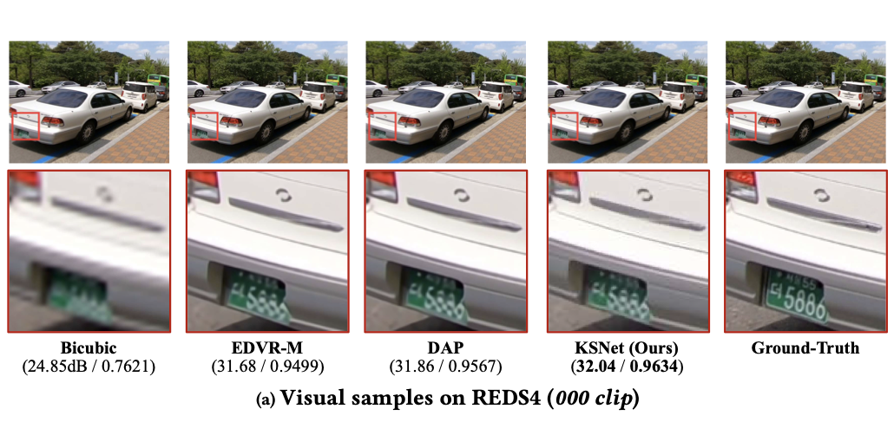

Kernel-split Computation
The method dynamically activates available kernel dimensions based on channel importance instead of applying one uniform convolution everywhere.
ACM MM 2023

Figure 1. Visual comparison on REDS4 showing sharper details from KSNet in an online video SR setting.
KSNet is designed for real-time video super-resolution, where reconstruction quality and latency must be balanced at every stage of the pipeline. The paper argues that temporal redundancy is underused by earlier efficient VSR systems, and proposes a kernel-split strategy that treats dynamic and static feature channels differently. By activating richer kernels only where they matter most, KSNet reduces computation while preserving stronger temporal modeling.
The key idea is to split feature channels into high-value and low-value groups according to their contribution. A multi-channel selection unit performs that discrimination hierarchically. Low-dimensional kernels are reused on low-value channels to save cost, while re-parameterized convolutional kernels are activated on high-value channels to model dynamic information more effectively. KSNet also adds a multiple flow deformable alignment module so temporal correspondence remains sufficiently rich without turning the full system into a heavy offline model.
In short, KSNet does not merely shrink the network. It redistributes computation across kernel dimensions so the expensive operations are concentrated on motion-sensitive features.
The method dynamically activates available kernel dimensions based on channel importance instead of applying one uniform convolution everywhere.
The multiple flow deformable alignment module keeps temporal representation strong enough for online VSR with affordable cost.
The paper positions KSNet as a practical design that improves reconstruction quality while remaining suitable for low-latency deployment.
The public ACM abstract clearly supports the qualitative conclusion that KSNet improves quality-speed trade-offs, but the original benchmark tables were not directly parseable during verification. This page therefore avoids listing unverified PSNR, SSIM, FPS, or Vid4/Vimeo numbers and keeps the emphasis on validated problem setting, method design, and official qualitative evidence.
@inproceedings{jin2023kernel,
title = {Kernel Dimension Matters: To Activate Available Kernels for Real-time Video Super-Resolution},
author = {Jin, Shuo and Liu, Meiqin and Yao, Chao and Lin, Chunyu and Zhao, Yao},
booktitle = {Proceedings of the 31st ACM International Conference on Multimedia},
pages = {8617--8625},
year = {2023}
}